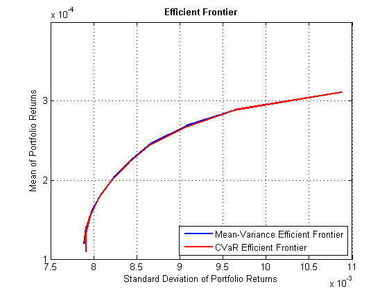

PORTFOLIOANALYSISSCRIPT explore your ideas - an intro to MATLAB
Contents
- 1) Import Data
- 2) Plot Time Series
- 3) Calculate Returns and Moments
- 4) Visualise the correlations between large cap equity stock indices
- 5) Use built-in statistical plots to investigate your data
- 6) Mean-Variance Portfolio
- 6.1) Setup portfolio
- 6.2) Plot the Mean-Variance efficient frontier
- 7) CVaR Portfolio
- 7.1) Setup portfolio
- 7.2) Plot the CVaR efficient frontier
- 8) Compare CVaR and Mean-Variance portfolios
- 8.1) Calculate Mean-Variance for CVaR Portfolios
- 8.2) Add CVaR Portfolios to Mean-Variance Plot
- 8.3) Compare Weights
- Visualise weight allocation.
- 9) Analyze normality of data
- 9.1) Let's analyze the returns
- 5.2) Add a normal fit to the histogram
- 10) Include transaction costs and turnover constraints in new portfolio
- 11) Resample the efficient frontier - a bootstrapped portfolio optimisation
1) Import Data
Read asset prices from a Database using autogenerated MATLAB scripts. Information can be retrieved from the database direct into a dataset array You can also subsequently customise the autogenerated code.
importFromDB; % Database Toolbox
2) Plot Time Series
Visualize imported time series with legend
createfigure(dates, prices);
3) Calculate Returns and Moments
Calculate daily returns, their means and covariance matrix. In this example we make a simplifying assumption of equating expected future expected average returns to historical averages
returns = tick2ret(prices,dates,'Continuous'); % log returns, Financial TB m = mean(returns) covMx = cov(returns) C = corrcoef(returns)
m =
0.00024639 0.00018916 0.00027306 -0.00027334 0.00014132 0.00031132
covMx =
9.0421e-05 5.9704e-05 6.8556e-05 2.3033e-05 4.5593e-05 7.0897e-05
5.9704e-05 0.00020332 0.00016496 4.441e-05 0.00012318 6.7353e-05
6.8556e-05 0.00016496 0.00023187 4.753e-05 0.00011755 8.1589e-05
2.3033e-05 4.441e-05 4.753e-05 0.00019462 3.6652e-05 1.5891e-05
4.5593e-05 0.00012318 0.00011755 3.6652e-05 0.00012237 5.161e-05
7.0897e-05 6.7353e-05 8.1589e-05 1.5891e-05 5.161e-05 0.00011831
C =
1 0.44033 0.47346 0.17363 0.43344 0.68547
0.44033 1 0.75972 0.22325 0.7809 0.43427
0.47346 0.75972 1 0.22374 0.69784 0.49261
0.17363 0.22325 0.22374 1 0.2375 0.10472
0.43344 0.7809 0.69784 0.2375 1 0.42893
0.68547 0.43427 0.49261 0.10472 0.42893 1
4) Visualise the correlations between large cap equity stock indices
interactively first, then generate code
corrplot(returns) % Econometric Toolbox
correlationPlot(C,names)
5) Use built-in statistical plots to investigate your data
figure normplot(returns) % Statistics Toolbox legend(names) % Explore your data, looking at distributions of returns % Interactive tool: dfittool (Statistics Toolbox) % Use the autogenerated code to explore the fit % generated code returns a fit object % pd1 - normal distribution object % pd2 - t Location-Scale distribution object % % The t location-scale distribution is useful for modeling data % distributions with heavier tails (more prone to outliers) than the normal % distribution. [pd1,pd2] = createFit( returns(:,1) ); % Explore Canada return series % Generate a new random sample from the fitted distribution newRandomSample = random(pd2,1e6,1);
6) Mean-Variance Portfolio
It’s a good idea to look at a portfolio problem according to different risk measures. So let’s create a mean-variance portfolio object, and find the 10 efficient portfolios according to a Mean-Variance risk proxy. The workflow is very similar to the CVaR portfolio workflow, except that we use the estimateAssetMoments method now, to estimate the mean and covariance of our return data.
6.1) Setup portfolio
pmv = Portfolio; pmv = pmv.setAssetList(names); pmv = pmv.estimateAssetMoments(returns); %Mean and covariance of asset returns from return data. pmv = pmv.setDefaultConstraints; %nonnegative weights that must sum to 1.
6.2) Plot the Mean-Variance efficient frontier
figure; pmv.plotFrontier(10);

7) CVaR Portfolio
Here we create the CVaR object and use the object's methods to pass in data and setup the CVaR problem. By setting the probability level to 0.95, we are choosing to minimize the mean loss in the 5% of portfolio returns with the highest losses.
7.1) Setup portfolio
pmc = PortfolioCVaR; pmc = pmc.setAssetList(names); pmc = pmc.setScenarios(returns); %Set asset returns scenarios by direct matrix pmc = pmc.setDefaultConstraints; % nonnegative weights that must sum to 1 pmc = pmc.setProbabilityLevel(0.95);
7.2) Plot the CVaR efficient frontier
figure; [pmcRisk, pmcReturns] = pmc.plotFrontier(10);
8) Compare CVaR and Mean-Variance portfolios
8.1) Calculate Mean-Variance for CVaR Portfolios
One way that we can compare the portfolios is to convert between risk proxies. Here, we'll calculate the Mean-Variance risk of the 10 CVaR portfolios using the CVaR portfolio weights.
pmcweights = pmc.estimateFrontier(10); pmcRiskStd = pmc.estimatePortStd(pmcweights);
8.2) Add CVaR Portfolios to Mean-Variance Plot
Now that we have the mean-variance risk of the CVaR portfolios, we can add them to the mean-variance frontier plot.
figure; pmv.plotFrontier(10); hold on plot(pmcRiskStd,pmcReturns,'-r','LineWidth',2); legend('Mean-Variance Efficient Frontier',... 'CVaR Efficient Frontier',... 'Location','SouthEast')
8.3) Compare Weights
Another way to compare the efficient portfolios is to look at the weights for the 10 portfolios. We'll visualize the weights for the CVaR and Mean-Variance side-by-side using area plots. This allows us to see the allocation differences, i.e. mix of the different assets in each of the 10 efficient portfolios.
pmvweights = pmv.estimateFrontier(10); [pmvRiskStd, pmvRet] = estimatePortMoments(pmv, pmvweights); riskfreeRate = 0; % Change this to a more realistic value sharpeRatios = (pmvRet ./ pmvRiskStd) - riskfreeRate; % or use sharpe function in Fin TB
Visualise weight allocation.
figure; subplot(1,2,1); area(pmcweights'); title('CVaR Portfolio Weights'); subplot(1,2,2); area(pmvweights'); title('Mean-Variance Portfolio Weights'); set(get(gcf,'Children'),'YLim',[0 1]); l = legend(pmv.AssetList); set(l, 'Position',[0.92 0.68 0.05 0.24]);
9) Analyze normality of data
9.1) Let's analyze the returns
Histogram of the returns of the Bond ETF's grouped into 50 bins
figure; hist(returns(:),50);
5.2) Add a normal fit to the histogram
If we try to fit a normal distribution to the return data, it becomes evident that a normal distribution may not be a good assumption to make. This helps explain the difference between our Mean-Variance portfolio, which assumes that returns are normally distributed, and our CVaR portfolio, which uses simulations that don’t necessarily need to be normal.
histfit(returns(:),50); figure(gcf);
10) Include transaction costs and turnover constraints in new portfolio
Q = pmv; % place all previous portfolio settings into a new portfolio Q % Initial portfolio, pick one associated with a particular risk level % (Estimate optimal portfolios with targeted portfolio risks.) initialPortfolio = estimateFrontierByRisk(pmv,0.01); Q = setInitPort(Q, initialPortfolio ); Q = setTurnover(Q, 0.1); % ensures average turnover is NO MORE THAN 10% Q = setCosts(Q,0.0002,0.0002); % 2bp buying/selling costs (don't need to be same) qweights = estimateFrontier(Q,20); [qRiskStd, qRet] = estimatePortMoments(Q, qweights); createEFconstrainedPlot(pmvRiskStd,pmvRet,qRiskStd,qRet,sharpeRatios)
11) Resample the efficient frontier - a bootstrapped portfolio optimisation
nSamples = 200; bootstrpPortOpt(returns,nSamples,names)